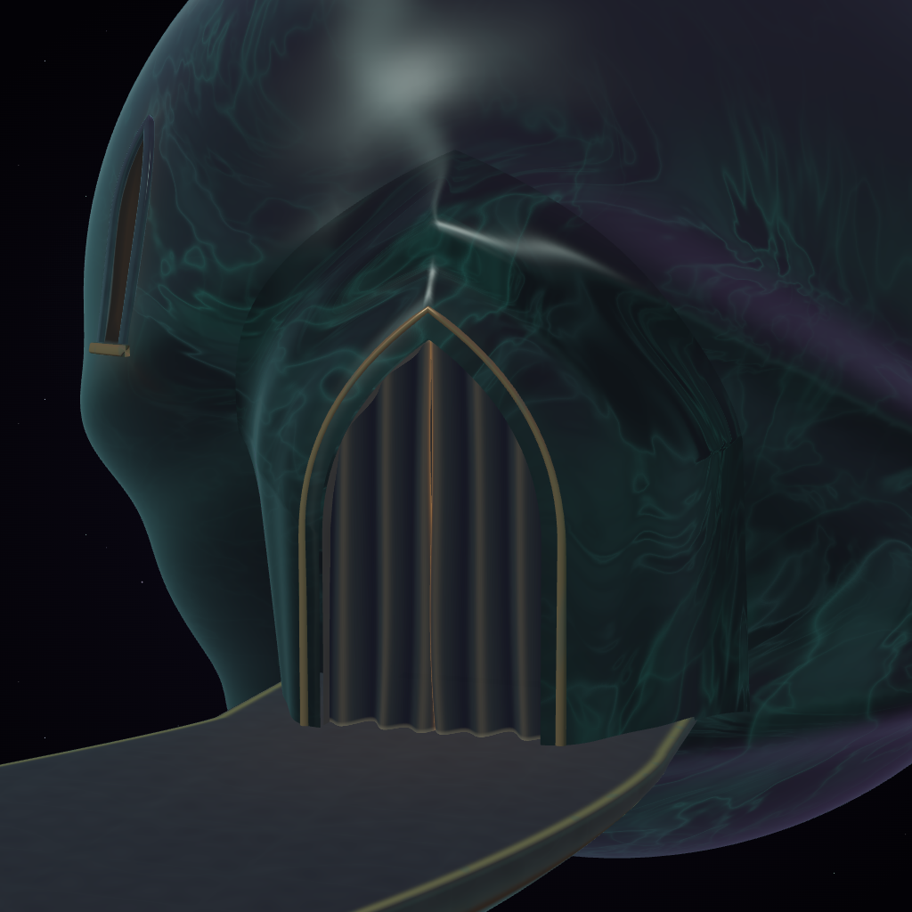
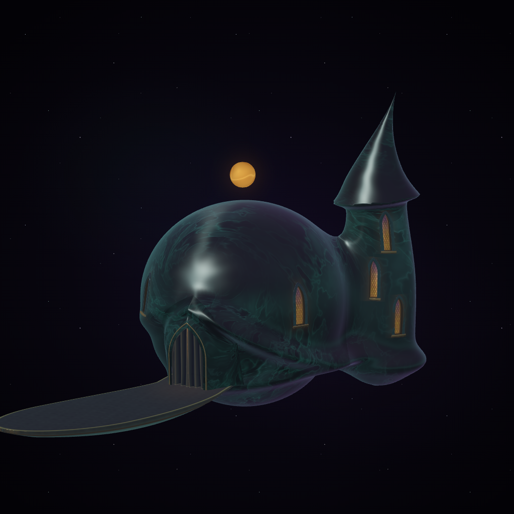
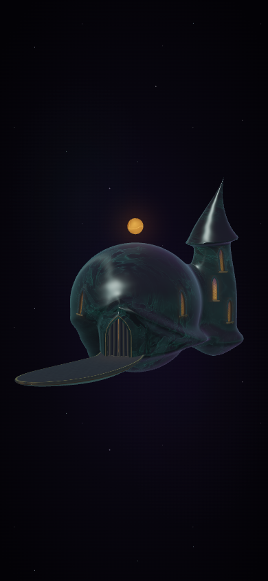

Konsept B — fase 1: form og kamera
Referansen er designfasiten. Denne gjennomgangen gjelder hovedform, proporsjoner, folder, tårn, inngang, landing og kameravinkel. Bildet til høyre er et faktisk skjermbilde av 3D-versjonen, med de eksisterende materialene og lysene.
Designfasit — utsnitt av hovedbildet i konsept B
Fase 1 — 1024 × 1024, tid 8,05 s, eksisterende materialer og lys
Den runde hovedkroppen, tårnets plassering og spiss, dørens høyde og landingens utstrekning er lagt nærmere referansen. Folder og dørinnramming er formet i geometri. Bildet er fortsatt mørkere og mindre gjennomlyst enn fasiten; materialer, glassdybde og lyssetting er ikke bearbeidet i fase 1.
Gjenst?r ? vurdere i formen: Foldene er jevnere og d?rinnrammingen tyngre enn i konseptet. Undersiden og landingen har fortsatt mindre raffinerte overganger. Materialer, lys og animasjoner venter p? din godkjenning av fase 1.
De innsamlede kontrollene viser fungerende inngang og readiness, ingen konsollfeil i sluttbildene og omtrent 30 bilder per sekund. Formen har h?yere GPU-kostnad og tar lengre tid ? bygge ved oppstart. Les full handoff og m?linger.

Inngang — samme døråpning og ganglinje som før

Kontrollvinkel — faktisk tredimensjonal form
Mobil innramming
